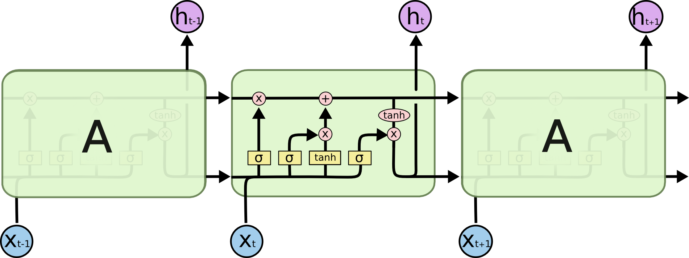
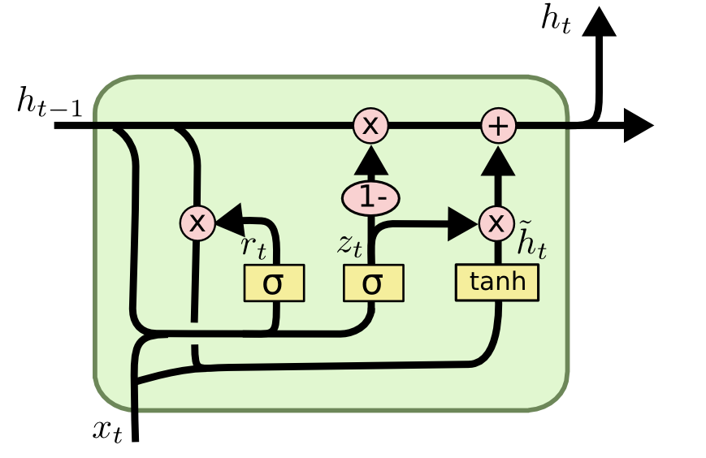
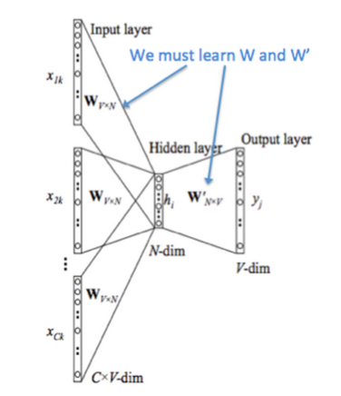
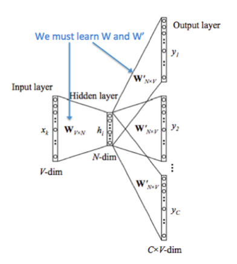
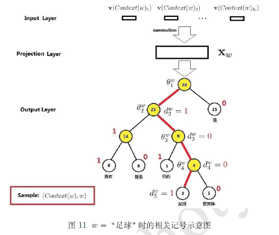
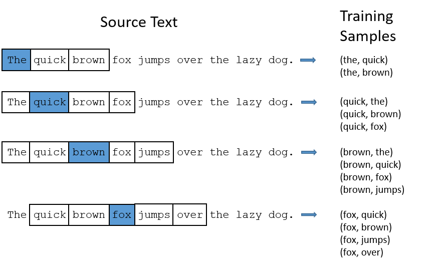
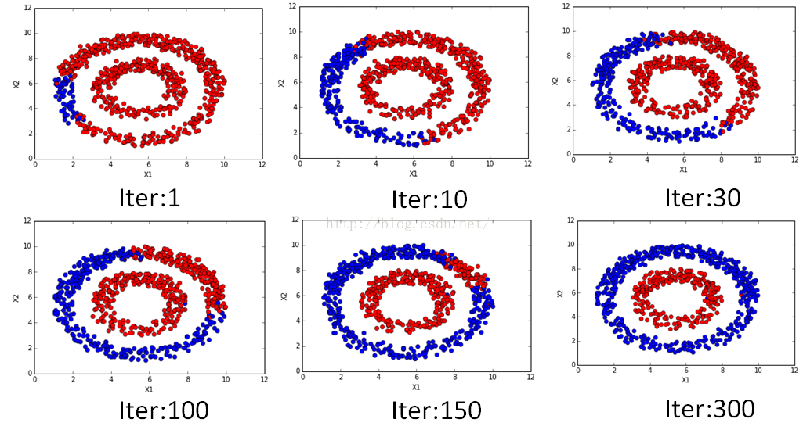
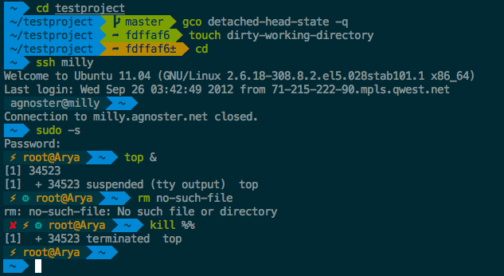
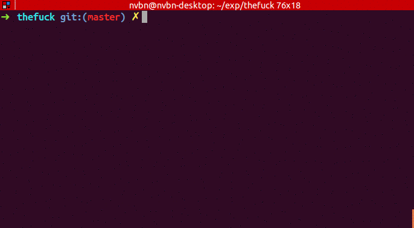

LSTM and GRU
LSTM
The avoid the problem of vanishing gradient and exploding gradient in vanilla RNN, LSTM was published, which can remember information for longer periods of time.
Here is the structure of LSTM:

The calculate procedure are:
$f_t$,$i_t$,$o_t$ are forget gate, input gate and output gate respectively. $\tilde{C_t}$ is the new memory content. $Ct$ is cell state. $ht$ is the output.
Use $f_t$ and $i_t$ to update $C_t$, use $o_t$ to decide which part of hidden state should be outputted.
GRU

$z_t$ is update gate, $r_t$ is reset gate, $\tilde{h_t}$ is candidate activation, $h_t$ is activation.
Compare with LSTM, GRU merge cell state and hidden state to one hiddent state, and use $z_t$ to decide how to update the state rather than $f_t$ and $i_t$.
Ref：
Models and Architechtures in Word2vec
Models
CBOW (Continuous Bag of Words)
Use the context to predict the probability of current word.

- Context words' vectors are $\upsilon_{c-n} ... \upsilon_{c+m}$ ($m$ is the window size)
- Context vector $ \hat{\upsilon}=\frac{\upsilon_{c-m}+\upsilon_{c-m+1}+...+\upsilon_{c+m}}{2m} $
- Score vector $z_i = u_i\hat{\upsilon}$, where $u_i$ is the output vector representation of word $\omega_i$
- Turn scores into probabilities $\hat{y}=softmax(z)$
- We desire probabilities $\hat{y}$ match the true probabilities $y$.
We use cross entropy $H(\hat{y},y)$ to measure the distance between these two distributions. $$H(\hat{y},y)=-\sum_{j=1}^{\lvert V \rvert}{y_j\log(\hat{y}_j)}$$
$y$ and $\hat{y}$ is accurate, so the loss simplifies to: $$H(\hat{y},y)=-y_j\log(\hat{y})$$
For perfect prediction, $H(\hat{y},y)=-1\log(1)=0$
According to this, we can create this loss function:
Skip-Gram
Use current word to predict its context.

- We get the input word's vector $\upsilon_c$
- Generate $2m$ score vectors, $uc_{c-m},...,u_{c-1},...,u_{c+m}$.
- Turn scores into probabilities $\hat{y}=softmax(u)$
- We desire probabilities $\hat{y}$ match the true probabilities $y$.
Models
Minimize $J$ is expensive, as the summation is over $\lvert V \rvert$. There are two ways to reduce the computation. Hierarchical Softmax and Negative Sampling.
Hierarchical Softmax
Encode words into a huffman tree, then each word has a Huffman code. The probability of it's probability $P(w\lvert Context(\omega))$ can change to choose the right path from root the che leaf node, each node is a binary classification. Suppose code $0$ is a possitive label, $1$ is negative label. If the probability of a possitive classification is $$ \sigma(X^T_\omega \theta)=\frac{1}{1+e^{-X^T_\omega}} $$
Then the probability of negative classification is $$ 1-\sigma(X^T_\omega \theta) $$
 足球's Huffman code is $1001$, then it's probability in each node are
where $\theta$ is prarameter in the node.
The probability of the 足球 is the production of these equation.
Generally,
Negative Sampling
Choose some negitive sample, add the probability of the negative word into loss function. Maximize the positive words' probability and minimize the negitive words' probability.
Let $P(D=0 \lvert \omega,c)$ be the probability that $(\omega,c)$ did not come from the corpus data. Then the objective funtion will be
where $\theta$ is the parameters of the model($\upsilon$ and $u$).
Ref:
Semi-supervised text classification using doc2vec and label spreading
Here is a simple way to classify text without much human effort and get a impressive performance.
It can be divided into two steps:
- Get train data by using keyword classificaton
- Generate a more accurate classification model by using doc2vec and label spreading
Keyword-based Classification
Keyword based classification is a simple but effective method. Extracting the target keyword is a monotonous work. I use this method to automatic extract keyword candicate.
- Find some most common words to classify the text.
- Use this equition to calculate the score of each word appears in the text. $$ score(i) = \frac{count(i)}{all\_count(i)^{0.3}}$$ which $all\_count(i)$ is the word i's wordc ount in all corpus, and $count(i)$ is the word i's word count in positive corpus.
- Check the top words, add it to the final keyword list. Repeat this process.
Finally, we can use the keywords to classify the text and get the train data.
Classification by doc2vec and Label Spreading
Keyword-based classification sometimes produces the wrong result, as it can't using the symantic information in the text. Fortunately, Google has open sourced word2vec, which can be used to produce semantically meaningful word embeddings. Furthermore, sentences can also be converted to vectors by using doc2vec. Sentences which has closed meaning also have short vector distance.
So the problem is how to classify these vectors.
- Using corpus to train the
doc2vecmodel. - Using
doc2vecmodel to convert sentence into vector. - Using label spreading algorithm to train a classify model to classify the vectors.
Parameters in dov2vec
Here are some parameter in gensim's doc2vec class.
window
window is the maximum distance between the predicted word and context words used for prediction within a document. It will look behind and ahead.
In skip-gram model, if the window size is 2, the training samples will be this:(the blue word is the input word)

min_count
If the word appears less than this value, it will be skipped
sample
High frequency word like the is useless for training. sample is a threshold for deleting these higher-frequency words. The probability of keeping the word $w_i$ is:
$$P(w_i) = (\sqrt{\frac{z(\omega_i)}{s}} + 1) \cdot \frac{s}{z(\omega_i)}$$
where $z(w_i)$ is the frequency of the word and $s$ is the sample rate.
This is the plot when sample is 1e-3.

negative
Usually, when training a neural network, for each training sample, all of the weights in the neural network need to be tweaked. For example, if the word pair is ('fox', 'quick'), then only the word quick's neurons should output 1, and all of the other word neurons should output 0.
But it would takes a lot of time to do this when we have billions of training samples. So, instead of update all of the weight, we random choose a small number of "negative" words (default value is 5) to update the weight.(Update their wight to output 0).
So when dealing with word pair ('fox','quick'), we update quick's weight to output 1, and other 5 random words' wight to output 1.
The probability of selecting word $\omega_i$ is $P(\omega_i)$:
$$P(\omega_i) = \frac{ {f(\omega_i)}^{3/4} }{\sum_{j=0}^{n}\left( {f(\omega_j)}^{3/4} \right) }$$
$f(\omega_j)$ is the frequency of word $\omega_j$.
Ref:
Brief Introduction of Label Propagation Algorithm
As I said before, I'm working on a text classification project. I use doc2vec to convert text into vectors, then I use LPA to classify the vectors.
LPA is a simple, effective semi-supervised algotithm. It can use the density of unlabeled data to find a hyperplane to split the data.
Here are the main stop of the algorithm:
- Let $ (x_1,y1)...(x_l,y_l)$ be labeled data, $Y_L = {y_1...y_l} $ are the class labels. Let $(x_{l+1},y_{l+u})$ be unlabeled data where $Y_U = {y_{l+1}...y_{l+u}}$ are unobserved, useally $l \ll u$. Let $X={x_1...x_{l+u}}$ where $x_i\in R^D$. The problem is to estimate $Y_U$ for $X$ and $Y_L$.
- Calculate the similarity of the data points. The most simple metric is Euclidean distance. Use a parameter $\sigma$ to cotrol the weights.
$$w_{ij}= exp(-\frac{d^2_{ij}}{\sigma^2})=exp(-\frac{\sum^D_{d=1}{(x^d_i-x^d_j})^2}{\sigma^2})$$
Larger weight allow labels to travel through easier.
- Define a $(l+u)*(l+u)$ probabilistic transition matrix $T$
$T_{ij}$ is the probability to jump from node $j$ to $i$. If there are $C$ classes, we can define a $(l+u)*C$ label matrix $Y$, to represent the probability of a label belong to class $c$. The initialiation of unlabeled data points is not important.
- Propagate $Y \leftarrow TY$
- Row-normalize Y.
- Reset labeled data's Y. Repeat 3 until Y converges.
In short, let the nearest label has larger weight, then calculate each label's new label, reset labeled data's label, repeat.

Ref:
Enable C Extension for gensim on Windows
For these days, I’m working on some text classification works, and I use gensim’s doc2vec function.
When using gensim, it shows this warning message:
C extension not loaded for Word2Vec, training will be slow.
I search this on Internet and found that gensim has rewrite some part of the code using cython rather than numpy to get better performance. A compiler is required to enable this feature.
I tried to install mingw and add it into the path, but it's not working.
Finally, I tried to install Visual C++ Build Tools and it works.
If this output a none -1 digit, then it's fine.
from gensim.models import word2vec print(word2vec.FAST_VERSION)
Some Useful Shell Tools
Here are some shell tools I use, which can boost your productivity.
Prezto
A zsh configuration framework. Provides auto completion, prompt theme and lots of modules to work with other useful tools. I extremely love the agnoster theme.

Fasd
Help you to navigate between folders and launch application.
Here are the official usage example:
v def conf => vim /some/awkward/path/to/type/default.conf j abc => cd /hell/of/a/awkward/path/to/get/to/abcdef m movie => mplayer /whatever/whatever/whatever/awesome_movie.mp4 o eng paper => xdg-open /you/dont/remember/where/english_paper.pdf vim `f rc lo` => vim /etc/rc.local vim `f rc conf` => vim /etc/rc.conf
pt
A fast code search tool similar to ack.
fzf
A great fuzzy finder, it can also integrate with vim by fzf.vim

thefuck
Magnificent app which corrects your previous console command.

Start
Over the years, I have read so many programmers’ blogs, which has helped me a lot. Now I think it’s the time to start my own blog.
I hope this can enforce myself to review what I have learned, and it would even be better if someone can benefit from it.